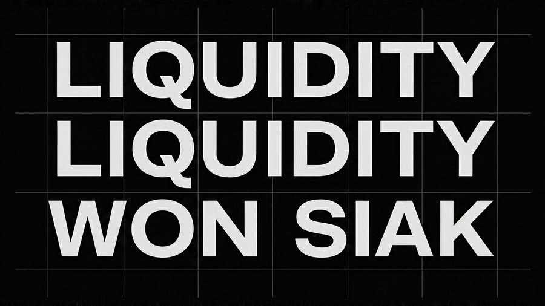
Case Study · Episode 17 · Showreel
THE SHOWREEL: sixty-six seconds, no visible seam
Twenty-one shots, cut to a score that did not exist a week ago. Ten of them were generated. Eight were built by hand in After Effects. Three are both. The reel does not tell you which is which, and that is the entire argument — but this page does, shot by shot, with the timecodes. What emerges is not a quality line. It is a much more useful one: generated footage owns anything organic; After Effects owns anything with a letterform, a number or an interface in it.
The reel, whole — watch it once without the cut list. Then scroll down and
find out how badly you did.
The Premise
A reel is an argument, not an archive
Sixteen episodes of this series produced a lot of footage. A reel is not a place to put all of it — it is a place to make one claim and defend it for a minute.
The claim here is that the method is no longer legible from the frame. Not that AI is as good as hand work, and not that hand work is obsolete. Something narrower and more practical: that on a timeline, cut to music, at two and a half seconds a shot, a viewer cannot separate the generated shots from the built ones — so the only question worth asking about a tool is which shots it is fastest at, not which shots it is allowed to make.
That claim is falsifiable, which is what makes it worth putting on a reel. So the cut list is published below with the method on every row. Watch first, guess, then check.
66.4sRuntime
21Shots
2.4sMedian shot
0.8sShortest
10sLongest
The spread is the point — a 0.8-second flash and a
ten-second hold in the same minute. Which of those a shot can survive turns out to depend on how it was
made. More on that below.
The Test
Twelve frames. Which ones are generated?
Pulled straight from the reel, in order, with their timecodes. Five were built by hand in After Effects, five were generated, two are a generated plate finished by hand. Decide before you press the button.
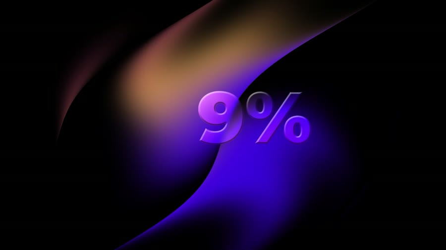
00:01After Effects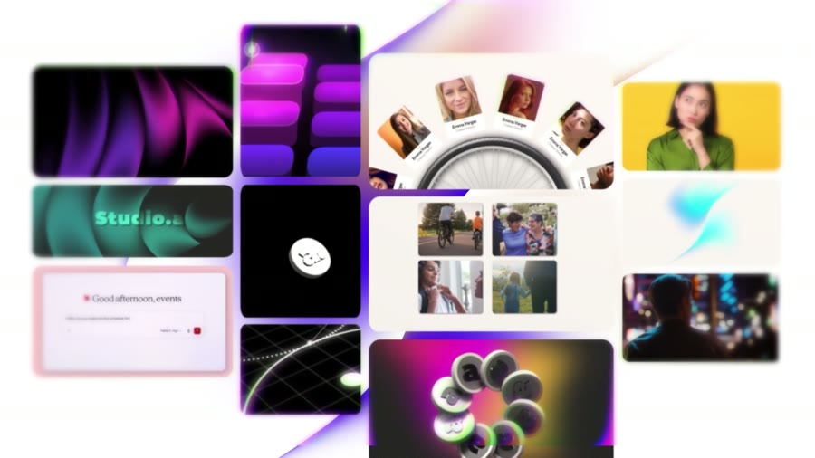
00:02After Effects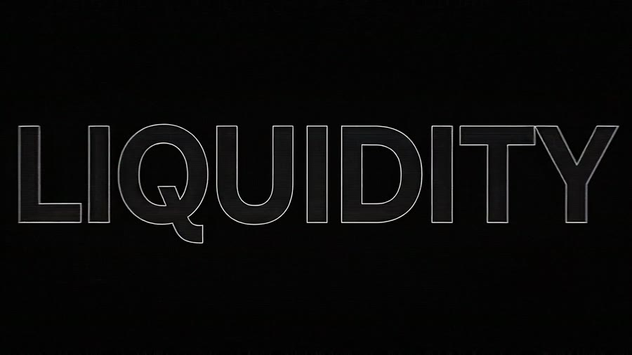
00:05After Effects00:08Generated
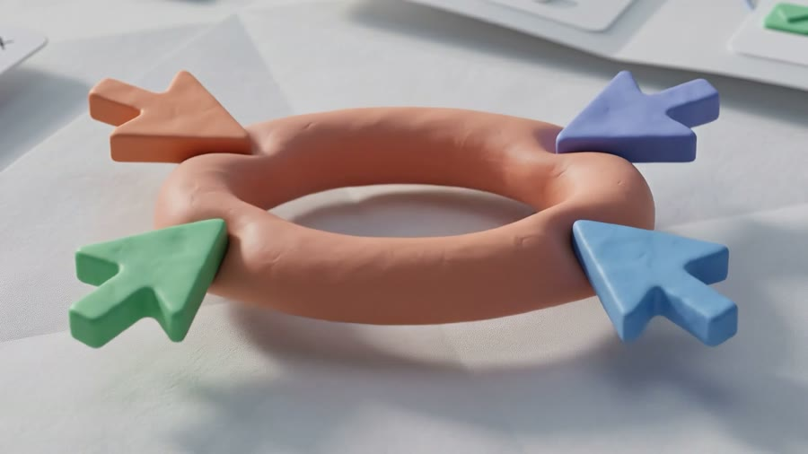
00:11Generated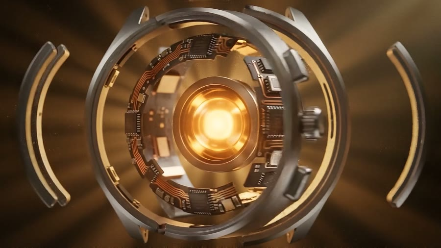
00:13Generated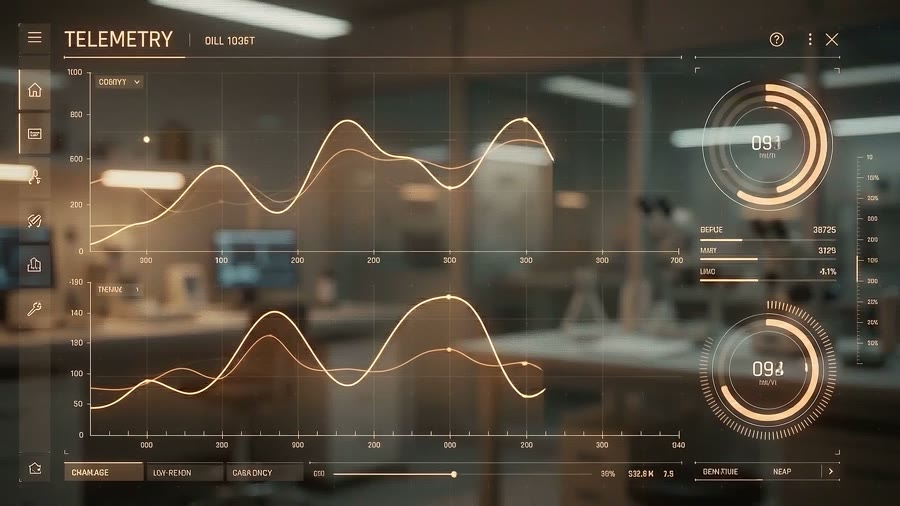
00:16Generated + AE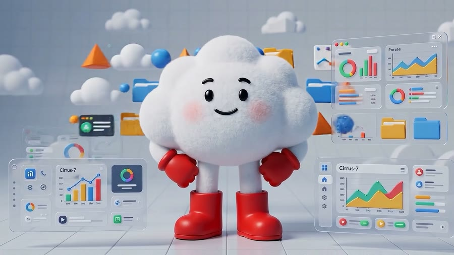
00:20Generated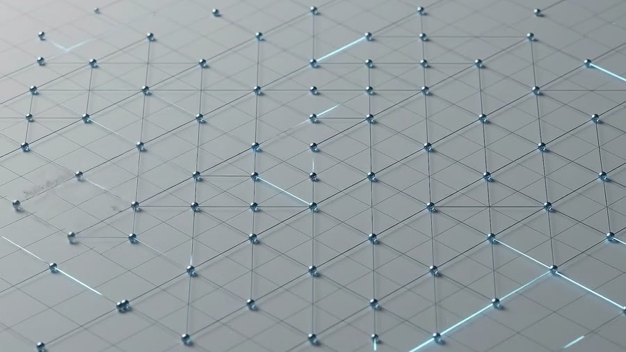
00:31Generated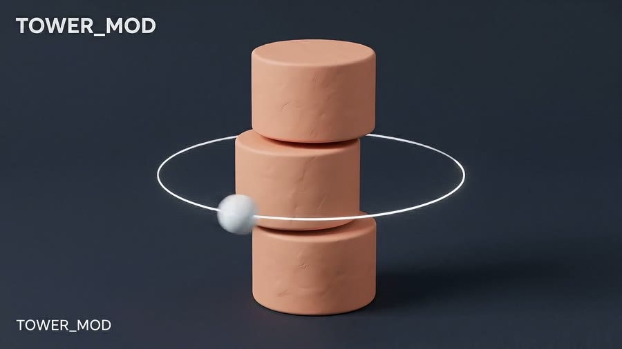
00:35Generated + AE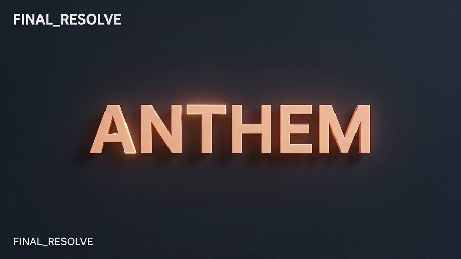
00:37After Effects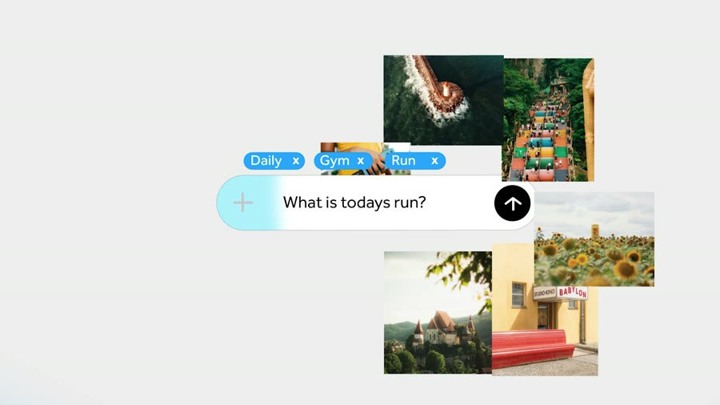
01:03After Effects
Built in After Effects
Generated video
Generated plate, finished in After Effects
If you got it right, you almost certainly used the rule
the next section is about — and not anything to do with render quality.
The Seam
Where the line actually falls
It is not photoreal versus stylised, and it is not expensive versus cheap. Sort the twenty-one shots by method and one property separates them cleanly: whether the frame has to hold something with a correct shape.
00:06 · type · After Effects
00:16 · interface · AE over a plate
00:22 · a world · generated
A letterform is correct or it is wrong; there is no near miss. The same is true of a
dial that has to read 094,
a chart whose line has to match a number, a brand mark, a UI that has to look like software a person
could actually use. Generative video is probabilistic about shape, which is exactly the wrong property
for anything a viewer will read. Every shot in this reel that you read rather than look at was
built in After Effects: the counting percentage, the services menu, LIQUIDITY, the telemetry overlay,
ANTHEM, the prompt bar, the end card.
Everything else — the card in raking light, the clay torus, the watch core, the cloud mascot and its ten seconds of dashboards, the neural burst, the node field, the painted street, the ronin, the rooftop — is a world. Worlds have no correct answer. A shadow can fall anywhere and still be right, which is precisely where a generative model stops guessing and starts performing. Those shots were generated, and generating them took hours where building them would have taken weeks.
The three hybrid shots are where the rule earns its keep. The telemetry panel, the TUNNEL_SEQ and TOWER_MOD cards: a generated environment underneath, and every readable element — the slate labels, the axis numbers, the dial readouts — laid over the top by hand. Neither tool could have finished those alone, and the seam between them is the least visible thing in the reel.
The one place the reel does hold a single method —
shots 14 to 19 run 19.5 seconds of generated film without a hand-built frame between them. It is the
longest unbroken run in the cut, and it is deliberate: this is the stretch where the reel stops arguing
and simply plays. Every shot in it has its own case study on this site.
The Build
How sixty-six seconds got assembled
01
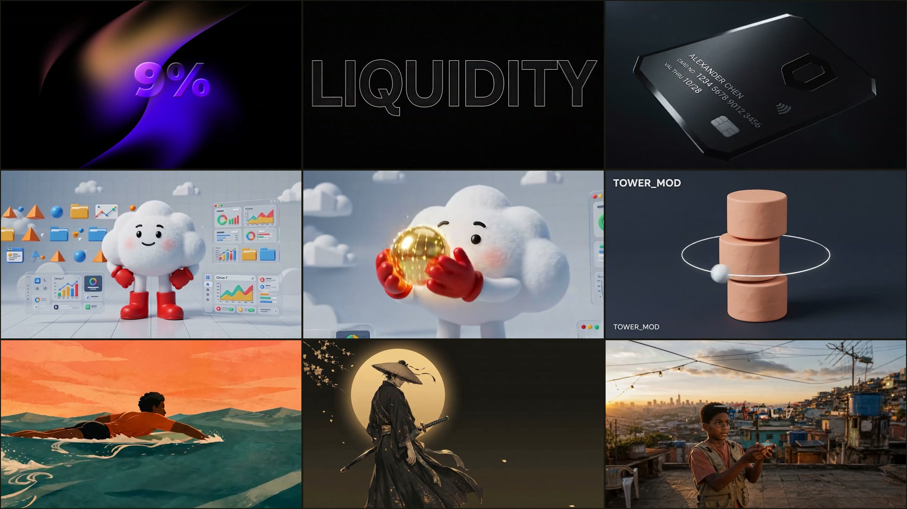
Select on the strongest four seconds, not the best project
A reel is judged frame by frame, so a beloved project with one great second loses to a minor one that holds up for four. Every candidate got cut down to its strongest continuous stretch first, and only then compared. Several finished films did not make it; several one-off tests did.
The archive going in spanned everything on this site — the ronin title from Episode 07, the watch from Episode 08, the rooftop from Episode 10, the painted street from Episode 11, the swimmer from Episode 13 — alongside the motion-design work that never had an episode of its own.
Longest survivor: 10.0s Shortest: 0.8s02
Sort by method, then destroy the sort
The first assembly grouped the shots by how they were made — all the After Effects work, then all the generated work. It played like two reels taped together, and it made exactly the argument the reel is trying to refute: here is the hand-made half, here is the AI half.
So the sort got shuffled deliberately. Hand-built type opens; three generated product shots follow inside the first twelve seconds; the reel's only ten-second hold is generated; the last full shot before the end card is hand-built interface. Nowhere does the reel run more than about twenty seconds without switching methods, and it never announces the switch.
Longest single-method run: ~20s03
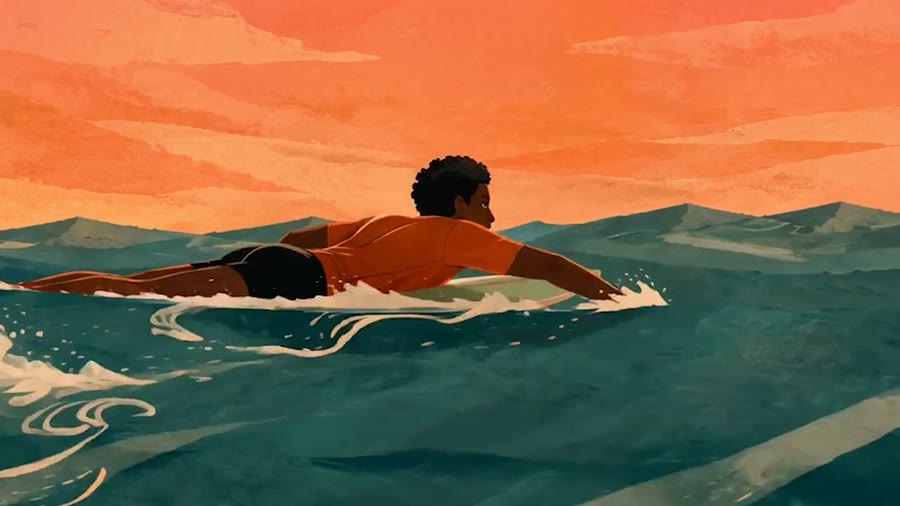
Cut to the track, and let the track decide the pacing
The score is a Suno generation, made for this edit rather than found and forced onto it — the same approach as Episode 13 and Episode 14. Because the music was written after the shot list existed, its structure could be asked for: a fast top, a long open middle, a hard button at the end.
That middle is why the mascot sequence gets ten seconds and the LIQUIDITY cards get 1.3. The median shot lands at 2.4 seconds, but the median is a bad description of this reel — the interesting number is the spread, and the spread came from the track.
Score written to picture04
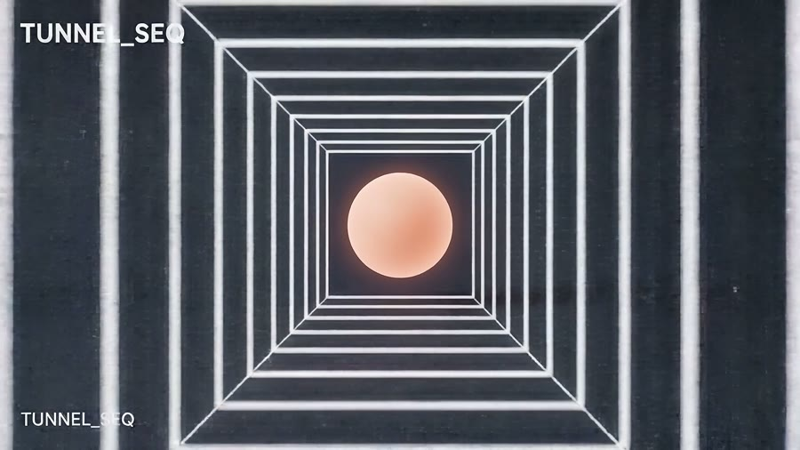
Slate the hybrid shots so the joins read as intent
The three cards in the mid-thirties — TUNNEL_SEQ, TOWER_MOD, FINAL_RESOLVE — carry corner slates in the reel itself. That was not decoration. Dropping type onto a generated plate can look like a mistake unless the type is obviously deliberate, so the labels are set flush to the frame edge, twice, in a mono voice that says this is a build card, not a finished shot.
It buys two things: the hybrid shots stop looking like failed composites, and the reel gets three beats of visual punctuation right before it hands over to the film work.
3 slated shots05
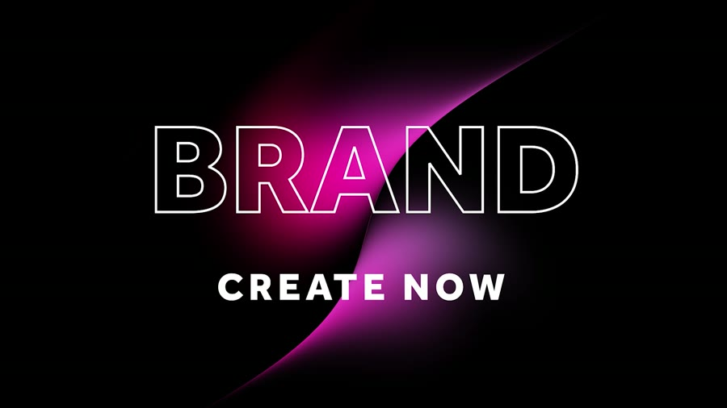
Land it in 2.2 seconds and stop
The end card runs 2.2 seconds — long enough to read, short enough that nobody reaches for the scrub bar. It is the last hand-built shot in the reel, and it is hand-built for the reason the whole seam section is about: it is a mark and two words, and both have to be exactly right.
The master came out at 1920×1080, 25fps, 124 MB. The file embedded at the top of this page is the same 66.4 seconds re-encoded with FFmpeg at CRF 24 — 27 MB, faststart, so it begins playing before it finishes downloading.
124 MB → 27 MBThe Cut List
Every shot, with its method
Twenty-one shots. Timecodes are from the graded master; durations are measured, not estimated. Where a shot comes from an episode on this site, the row links to it.
| # | In | Dur | Shot | Method |
|---|---|---|---|---|
| 01 | 00:00.0 | 1.2s | Percentage counter over a violet gradient plate | After Effects |
| 02 | 00:01.2 | 1.3s | Studio work grid — screens and photo cards flying in | After Effects |
| 03 | 00:02.5 | 2.2s | Services menu — animation / motion graphics / brand strategy | After Effects |
| 04 | 00:04.8 | 1.3s | LIQUIDITY, single outlined line | After Effects |
| 05 | 00:06.0 | 1.3s | LIQUIDITY stacked three deep on the grid | After Effects |
| 06 | 00:07.4 | 1.9s | Black metal card in raking light | Generated |
| 07 | 00:09.2 | 2.8s | Clay torus threaded with oversized cursors | Generated |
| 08 | 00:12.0 | 5.1s | Watch core → TELEMETRY panel — dials, waveforms, readouts | Generated + AE |
| 09 | 00:17.1 | 10.0s | The cloud mascot — dashboards, halo, gold orb | Generated |
| 10 | 00:27.1 | 6.7s | Neural burst → node field → glass dashboards | Generated |
| 11 | 00:33.8 | 0.8s | TUNNEL_SEQ — wireframe tunnel, clay sphere | Generated + AE |
| 12 | 00:34.6 | 3.1s | TOWER_MOD — stacked cylinders in an orbiting ring | Generated + AE |
| 13 | 00:37.8 | 1.2s | FINAL_RESOLVE — ANTHEM in extruded copper | After Effects |
| 14 | 00:38.9 | 2.4s | The swimmer, open water — Episode 13 | Generated |
| 15 | 00:41.4 | 1.0s | Kite over the painted street — Episode 11 | Generated |
| 16 | 00:42.3 | 3.5s | The street, laundry lines at golden hour — Episode 11 | Generated |
| 17 | 00:45.8 | 4.8s | The ronin under the moon — Episode 07 | Generated |
| 18 | 00:50.6 | 3.8s | The movement, exploded — Episode 08 | Generated |
| 19 | 00:54.4 | 4.0s | Rooftop, kite, city behind — Episode 10 | Generated |
| 20 | 00:58.4 | 5.8s | Prompt bar — tags, query, photo scatter | After Effects |
| 21 | 01:04.2 | 2.2s | BRAND / CREATE NOW end card | After Effects |
Read the Method column downward and the shuffle from
step 02 is visible as a pattern: five, two, one, two, two, one, six, two. No run of one method long
enough to become a section.
Behind the Scenes
What a minute of this teaches
Generated footage can hold a ten-second shot
The mascot sequence runs 10.0 seconds against a 2.4-second median — four times the reel's normal patience. It survives because generated motion has no keyframe seams to defend and no render budget punishing a longer take.
Hand-built shots in this reel top out around 5.8 seconds, and not by accident: every extra second of built animation is another second somebody has to animate.
The 0.8-second shot is the honest one
TUNNEL_SEQ gets 0.8 seconds — twenty frames. It is in the reel because it is a beautiful twenty frames and out of the reel by the twenty-first, because the shot has nowhere to go after the camera arrives.
Knowing which of your shots are twenty-frame shots is most of what cutting a reel is.
The type is the giveaway, so use it
If you want a viewer to be unable to place a shot, take the words out of it. If you want them certain a human made it, put words in. Both moves are available on the same timeline, which is what the mid-thirties slate cards are doing.
Group by method and the reel argues against you
The first assembly was sorted by tool and it read as two portfolios stapled together — a before and an after. Interleaving is not a stylistic preference here; it is the difference between a reel that says look what AI can do now and one that says look at the work.
Write the music after the shot list
A found track forces the edit into somebody else's structure. Generating the score once the shots were chosen meant the brief could include the shape — fast top, open middle, hard button — and the ten-second hold became possible instead of merely desirable.
27 MB is a design decision
The 124 MB master is the wrong file to put on a web page. -crf 24 with
+faststart gets it to 27 MB with no visible loss at this size, and starts playing
before the download finishes. A reel nobody waits for is a reel nobody watches.
Toolbox
Everything used, and what it did
After Effects
Type, data, interface — and the cut itself
Type, data, interface — and the cut itself
Kie.ai & friends
Ten generated shots: the worlds, the mascot, the films
Ten generated shots: the worlds, the mascot, the films
Suno
Written to the shot list, not found
Written to the shot list, not found
FFmpeg
124 MB master → 27 MB, faststart
124 MB master → 27 MB, faststart